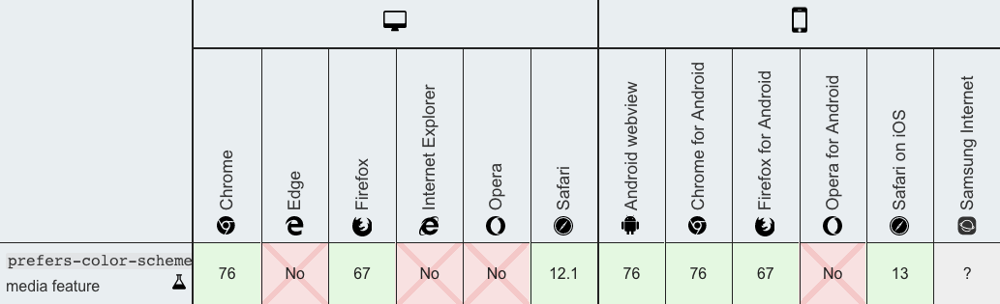

Dark mode on your website triggered by system dark mode using CSS
30 Sep 2019If this site is in currently in dark mode, then that means you have turned on darkmode on your system and if you are reading this post and everything is bright, then you most likely have not enabled dark mode your system.
After Apple released dark mode on macOS Mojave, they also released a new version of WebKit for Safari, which supported dark mode. With this updated version of WebKit, developers are able to change how their website functions (e.g applying dark mode) when the user turns on dark mode on their system. This version of WebKit is available on the web browsers and operating systems shown below:

To enable dark mode on your site, when the user has dark mode enabled on their system, all you have to do is add the CSS below to your website
/*
This is the CSS used for this website, so you might want to remove
some elements like figcaption, if you are not using it.
*/
@media (prefers-color-scheme: dark) {
body {
color: #d7d7d8;
background-color: #161716;
}
a {
color: #66bbff;
}
code {
color: #d5dada;
background: #313231;
}
figcaption {
color: #d7d7d8;
}
}After applaying the CSS to your website, this should happen: 
• • •
If you only knew the power of the darkside - Dark Vader
Thank you for reading this post, and I hope you were able to add this cool effect your website too!